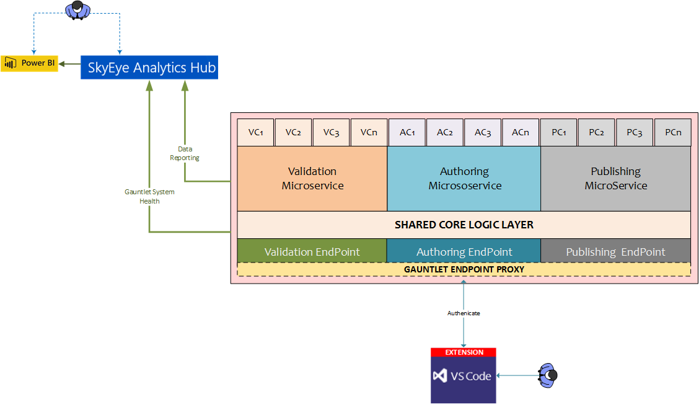

Gauntlet - VS Code
Gauntlet is an in-development standardized web API service layer that consolidates content validation and authoring checks into a scalable, performant, and extensible framework. Gauntlet provides a secure single end-point, which allows checks to be executed during authoring time in VS Code via a
 .
.


The key goals of Gauntlet are to improve content quality and increase writer productivity by ensuring that the majority of validation checks happen upstream instead of being discovered post-publish. Gauntlet and the VS Code extension will allow writers to validate their content as they go and make any corrections to broken links, incorrect metadata, missing art files, and so on prior to publishing. Although validation will still happen downstream, this on-the-fly up-stream validation will help writers remain more focused within VS Code and make corrections in real-time.
Additionally, Gauntlet will integrate directly with the SkyEye Analytics Hub to publish the results of all validation checks. The validation results and telemetry data will allow over time a complete overview of the “health” of the content, which will facilitate data driven decisions.